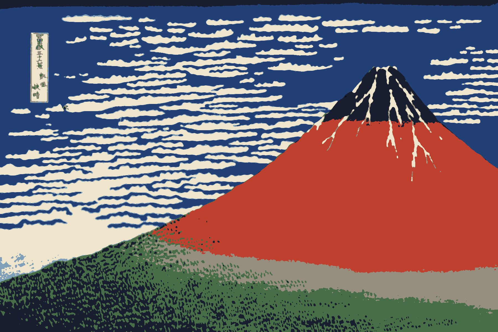
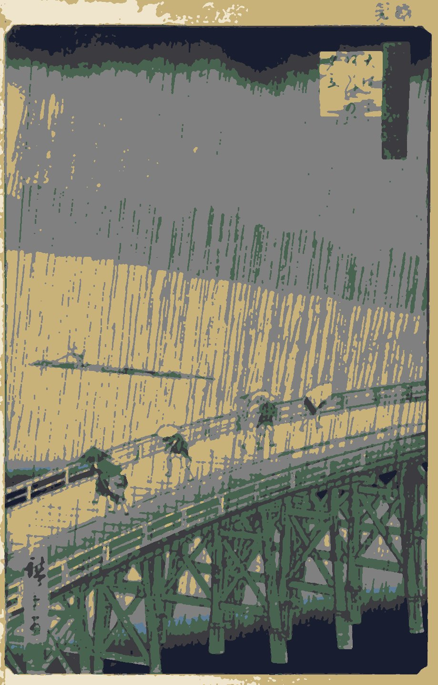
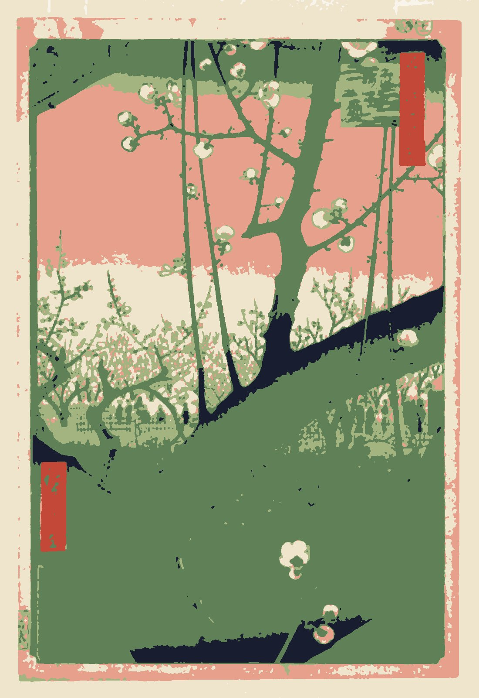

36 TONGUES三十六语View 01第一景
Thirty-six languages三十六种语言
From Japanese to Portuguese, one engine with native-level fluency in every pair.从日语到葡萄牙语，一套引擎，每一组语言对都是母语级的流畅。
Nami translates between 36 languages and keeps the tone, rhythm and cultural weight of a phrase, not just its words.Nami 在 36 种语言之间互译，保留一句话的语气、节奏和文化分量，而不只是字面意思。
Printed live from five colour blocks, the way Hokusai's carvers did. Move your cursor and the blocks slip out of register.像北斋的刻工那样，分五块色版现场套印。移动鼠标，色版会轻轻错位。
Pick a haiku, pick a language. Nami keeps the cut, the count and the joke: the parts a literal translation drops.选一首俳句，选一种语言。Nami 会留住停顿、音节和那一点幽默，也就是直译最先丢掉的东西。

36 TONGUES三十六语From Japanese to Portuguese, one engine with native-level fluency in every pair.从日语到葡萄牙语，一套引擎，每一组语言对都是母语级的流畅。

TONE语气Downpour or drizzle, urgent, playful or formal: Nami hears the mood of a message and keeps it.一句话是急雨还是细雨，急迫、俏皮还是正式，Nami 都听得出来，并原样保留。

IDIOM熟语Idioms, puns and honorifics are carried over with care instead of being flattened.成语、双关和敬语都被小心搬过去，而不是被压平。